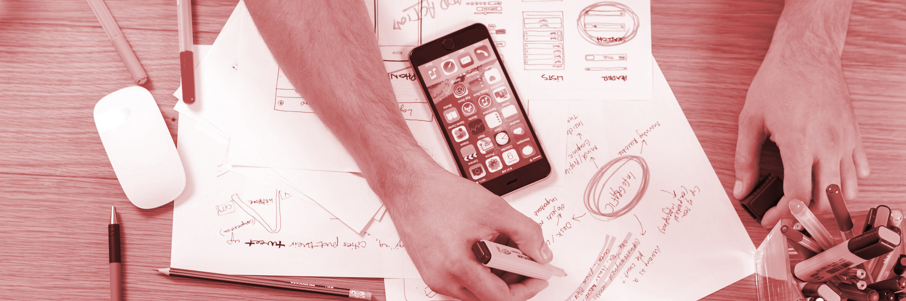

Web Design and Development
Web Design and Development a discipline that is involved in the creation of websites. It is an umbrella term for web design and web development. To put simply, web design is involved with how a website looks or feels like, while web development is involved with how a website functions. This discipline encompasses three major aspects: design, front-end development, and back-end development.
Careers under Web Design and Development
- SEO Specialist
- SEO specialists are marketing professionals who use research and analysis to improve a website's ranking on search engines like Google. They find the most popular and relevant keywords used in search engine queries and insert them into websites, helping search engines find those sites and display them to web users.
- Multimedia Specialist
- Multimedia specialists create computer animation, audio, video and graphic image files for multimedia applications. These applications can include presentations, games, motion pictures, CD-ROMs, information kiosks and the web.
- UX Designer
- UX designers turn applications into something that people like and want to use. UX (user experience) designers measure and optimize applications (usually web based) to improve ease of use (usability), and create the best user experience by exploring many different approaches to solve end-users' problems.
- UX Researcher
- A UX researcher works to gather detailed information from users through both qualitative and quantitative means. Interviews, diary studies, and usability testing are all used to collect and evaluate data systematically. UX research works to achieve good UX by systematically investigating clients’ experiences and figuring out how businesses can tailor their products and services to encourage optimal user reactions.
- Web Content Manager
- A Web Content Manager writes, proofreads, and edits content; develops and manages an editorial calendar to ensure timely content; and, collaborates with marketing and design teams to ensure consistent brand messages across all channels.
- Web Developer
- A Web Developer is in charge of ensuring websites look good and function properly. Web developers collaborate with website and graphic designers, monitor website traffic, troubleshoot website problems when they arise, and update websites as necessary.
- Web Designer
- Web designers plan, create and code internet sites and web pages, many of which combine text with sounds, pictures, graphics and video clips. A web designer is responsible for creating the design and layout of a website or web pages. It can mean working on a brand new website or updating an already existing site.